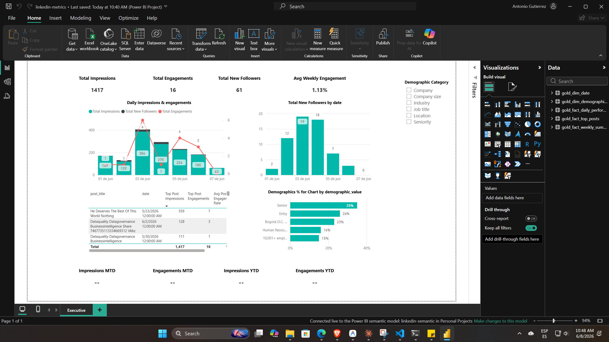

Caso de estudio de Social Media Analytics
LinkedIn Metrics - Análisis de Rendimiento
Análisis detallado de métricas de LinkedIn para optimizar la estrategia de contenido, el engagement y el crecimiento de la red profesional.
Power BI
DAX
LinkedIn API
Trend Analysis
Identificar los pilares de contenido más efectivos y optimizar los horarios de publicación para maximizar el engagement.
Estrategia por métrica
Acciones recomendadas para optimizar el rendimiento de la cuenta basadas en los datos analizados.
Engagement Rate
New Followers
Demographics
Dashboard Deep Dive

Pestaña 01
Resumen de Engagement e Impresiones
AnalyticsInsights
GrowthFollowers
ReachEngagement
Hallazgos Clave
- Seguimiento de tendencias de crecimiento mensual.
- Identificación de las publicaciones con mayor tasa de interacción.
- Análisis demográfico de las visualizaciones del perfil.
- Correlación entre frecuencia de publicación y alcance total.